SSHD2382 · Category 02
Colour
1. Scope
This category has about 30 books, which fall into four strands:
| Strand | Key books | Focus |
|---|---|---|
| Colour science and systems | Asakura, 《色彩構成》; Cui Shengguo, 《色彩構成》; 《美國色彩基礎教材》 | Light and colour, the three attributes of colour, Munsell / Ostwald / PCCS systems |
| Colour perception | Albers, 《色彩感知學》; Betty Edwards, 《貝蒂的色彩》 | Relativity of colour, simultaneous contrast, colour constancy |
| Colour scheme practice | Liang Jinghong's series, 《配色設計原理》, 《七日掌握設計配色基礎》, colour scheme handbooks | Base / secondary / accent colours, tone, step-by-step colour for layouts |
| Colour culture | 《觀念之色》, the "colour symbolism" chapters of various books | The five-colour view, proper and intermediate colours, cross-cultural meanings |
flowchart LR light["Light<br/>wavelength, source"] --> perception["Perception<br/>eye, brain, contrast"] perception --> attributes["Attributes<br/>hue, value, chroma"] attributes --> systems["Systems<br/>Munsell PCCS"] systems --> harmony["Harmony<br/>hue, tone, area"] harmony --> meaning["Meaning<br/>emotion, culture, brand"]
2. Core Concepts
2.1 Light and colour
- Visible light has wavelengths of about 380–780 nm; a prism splits white light into a spectrum.
- Light-source colour (the colour of the light itself), object colour (the colour an object shows after it reflects or transmits some wavelengths), and local colour (the colour we think of as an object's "own" colour under ordinary light).
- The cone cells of the eye distinguish colour, and the rod cells handle light and dark. Colour-blindness test plates (Ishihara) use dots of the same value but different hues to test colour vision.
2.2 Colour mixing
- RGB is used for screens; CMYK is used for print, where K (black) makes up for the impure black that CMY produce when mixed.
- The RGB gamut is larger than the CMYK gamut: vivid greens, blues and oranges on screen "turn grey" in print, so control them with proofs or spot colours (Pantone).
2.3 Hue, Value, Chroma
| Attribute | English | Description | Role in design |
|---|---|---|---|
| Hue | Hue | The "name" of a colour, such as red, yellow or blue | Recognition, association, warm and cool |
| Value | Value / Lightness | How light or dark it is; yellow has the highest natural value, violet the lowest | Hierarchy, readability, space |
| Chroma | Chroma / Saturation | How vivid it is; adding grey, black, white or the complement lowers chroma | Strength, mood, primary and secondary |
Betty Edwards's 《貝蒂的色彩》 stresses that value matters more than hue. If a painting or a layout still works when photographed in black and white, its colour scheme will usually not go wrong.
2.4 Colour wheel
2.5 Colour order systems
| System | Structure | Features |
|---|---|---|
| Munsell | Hue H, value V (0–10), chroma C; an irregular colour solid | Built on perceptually equal steps; the most widely used in teaching and science |
| Ostwald | Mixing ratios of pure colour + white + black; a double cone | Good for deriving harmonious schemes systematically |
| PCCS (Japan Color Research Institute) | 24 hues + Tone (such as vivid, light, dull, dark) | Thinks about colour schemes in terms of "tone"; the best fit for design practice |
| CMYK / RGB / HSB | Numerical systems used by devices and software | HSB is closest to how people describe colour intuitively |
The PCCS idea of "tone" is very useful: different hues in the same tone (for example, all pale tone) harmonise naturally, because their value and chroma match.
2.6 Interaction of colour
Albers's central claim is that colour is the most relative medium — the same colour looks different on different backgrounds, and different colours can look the same on certain backgrounds.
- Simultaneous contrast: grey looks greenish on a red ground and reddish on a green ground; a light ground makes a patch look darker, and a dark ground makes it look lighter.
- Successive contrast / After-image: after staring at one colour, you see its complement.
- One colour as two, two colours as one: by controlling the background, you can make one colour look like two.
- Transparency: fill the overlap of two colours with a suitable in-between colour, and you "see" transparency.
- Colour constancy: the brain automatically subtracts the effect of the light source, so when painting from life you must make a deliberate effort to "see" the actual colour.
3. Principles & Methods
3.1 Dividing roles in a colour scheme
Liang Jinghong and 《配色設計原理》 give the same advice: decide each colour's function first, then choose the actual colour.
| Role | Rough proportion | Function |
|---|---|---|
| Base / Dominant | About 60–70% | Sets the overall impression (usually the background or large areas) |
| Secondary | About 20–30% | Supports the base colour and separates blocks of information |
| Accent | About 5–10% | Guides the eye; buttons, keywords |
Area principle: the larger the area, the more you should lower its chroma; a high-chroma colour stands out more in a small area. But communication needs (a brand colour, for example) can override the area principle.
3.2 Steps for building a colour scheme
- Clarify the goal: who the audience is, what mood you want, and which medium it will appear in (print / screen).
- Find keywords: turn words such as "young, healthy, trustworthy" into colour impressions (you can use an image scale: warm–cool × soft–hard).
- Choose the base colour: take it from the brand, the product, the subject or a photograph.
- Set the tone: decide whether the whole is vivid, soft, dark or grayish, so the hues harmonise automatically.
- Add accents: use the complement or a high-chroma colour for small amounts of emphasis.
- Check in black and white: convert to greyscale and see whether the value hierarchy holds.
- Test in context: check at real size, on the real material or screen; for print, make proofs.
3.3 Less is more
- Liang Jinghong sets out levels of colour complexity: pure white → one colour → two colours → many colours → gradients → images → overlays. Each level up makes control harder.
- 《黑白灰設計》 reminds us that once colour is removed, a design has only form, value and white space left, which makes it the best training in fundamentals.
- Two-colour combinations are the foundation of using colour; with three or more colours you need to set up a "rule" (same tone, same hue, or repetition).
3.4 Emotion and culture in colour
| Colour | Common associations (positive / negative) | Note |
|---|---|---|
| Red | Passion, celebration, warning / danger, violence | An auspicious colour in Chinese tradition; in financial charts in mainland China, Hong Kong and Taiwan "red means up, green means down", the opposite of Europe and America |
| Yellow | Bright, lively, attention / cheap, caution | High value, so it reads poorly on white |
| Blue | Trust, technology, calm / cold, melancholy | The most common colour for corporate and financial brands |
| Green | Nature, health, safety / immaturity | Large areas of high-chroma green easily look "noisy" |
| Black | Luxury, authority, formality / death, heaviness | Luxury goods often use black + gold / white |
| White | Purity, simplicity / emptiness, mourning (East Asian tradition) | White space is also a colour |
《觀念之色》 points out that Chinese tradition treats qing (blue-green), chi (red), huang (yellow), bai (white) and hei (black) as the "five proper colours" (zhengse), matched with the five phases and the five directions. Proper colours and intermediate colours (jianse) were ranked, and for a long time colour was a sign of ritual order and social status. This reminds designers that the meaning of colour is a cultural construction, not a universal law.
4. Selected Figures
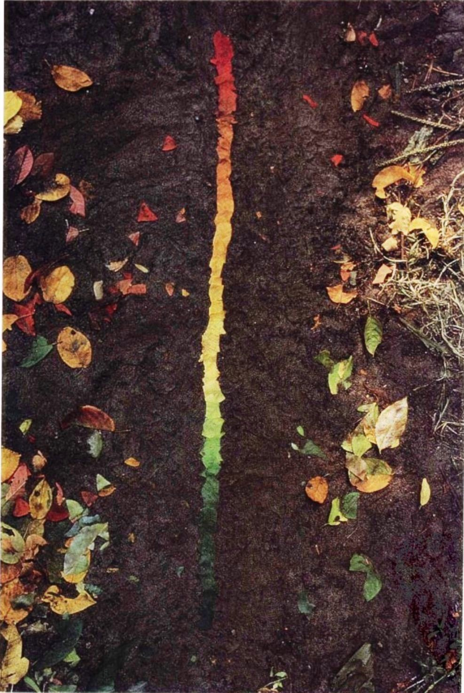
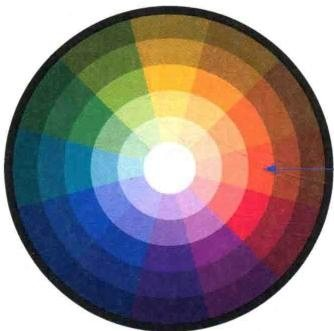
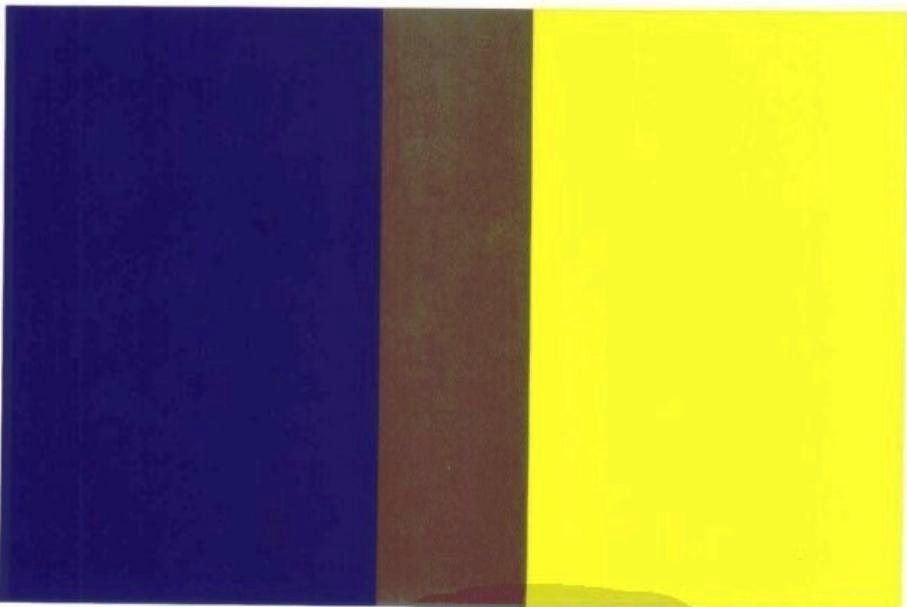
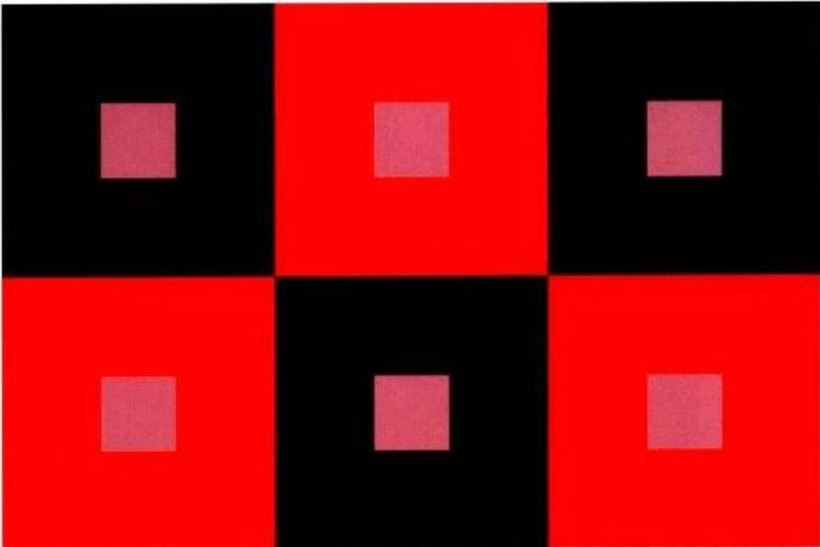
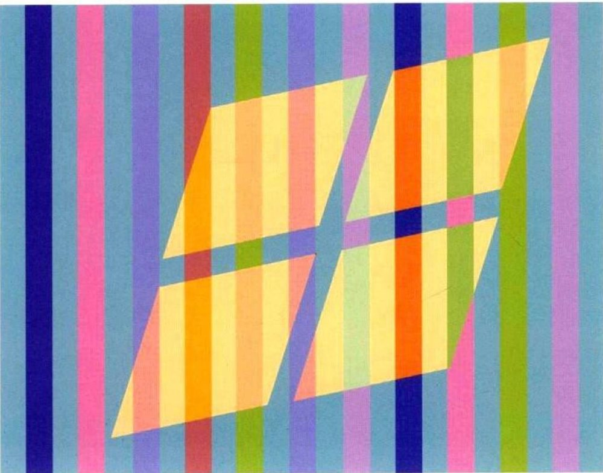
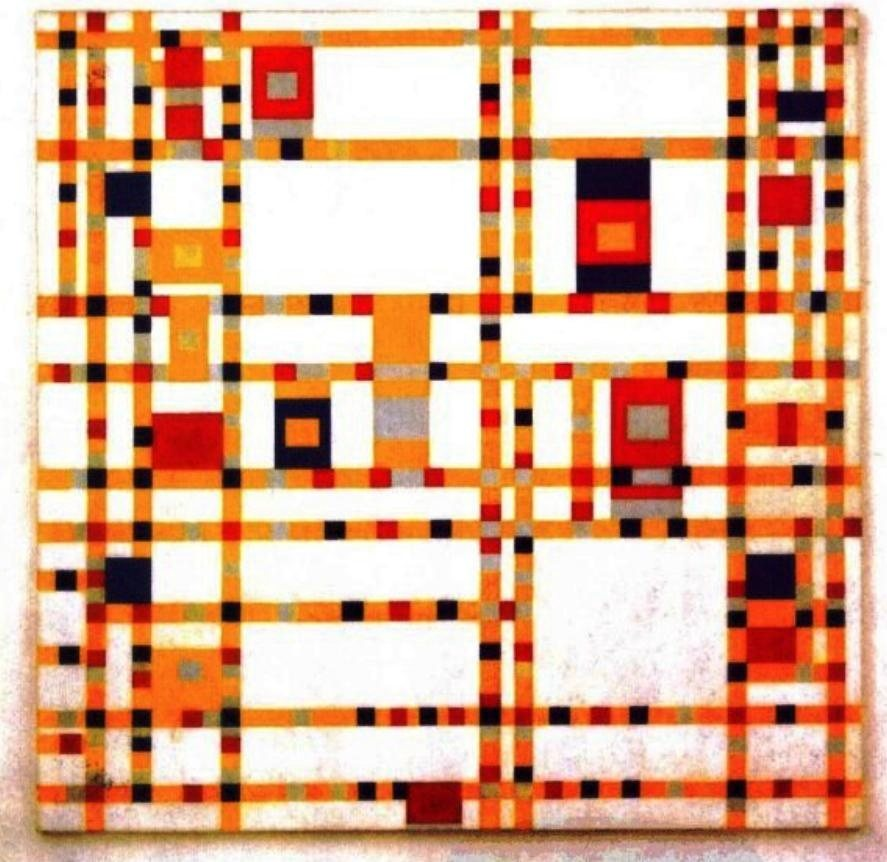
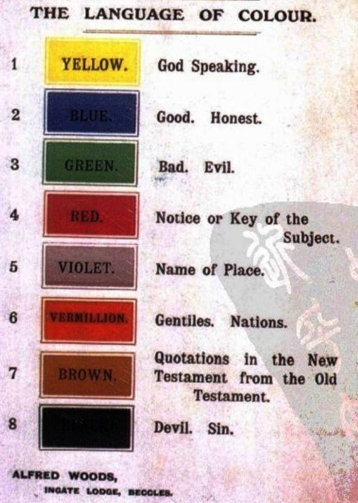
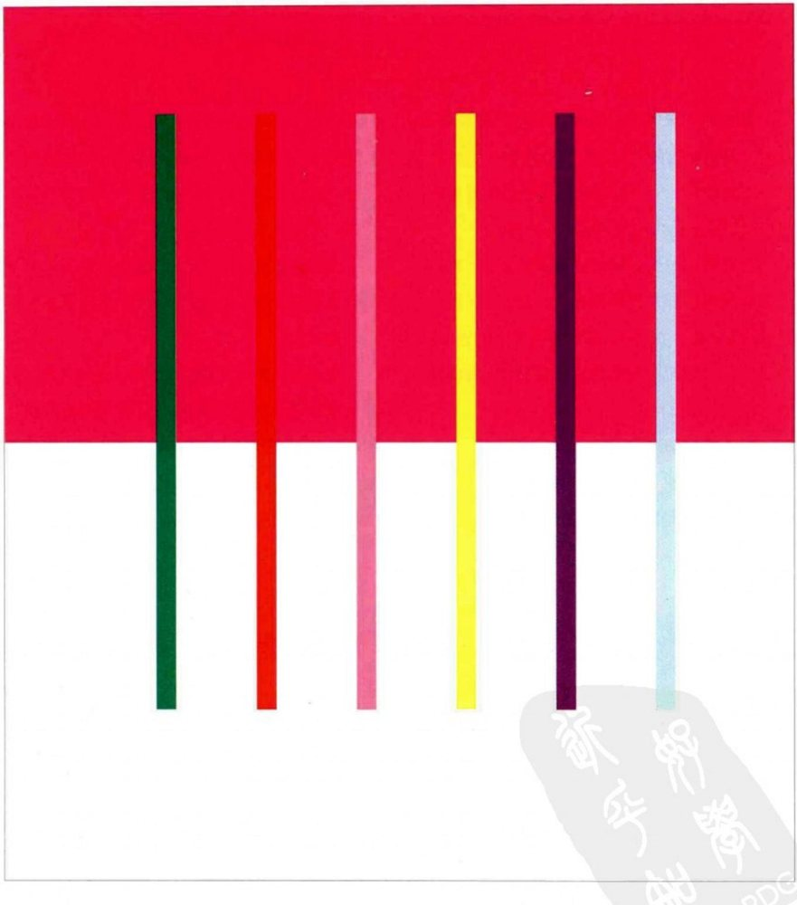
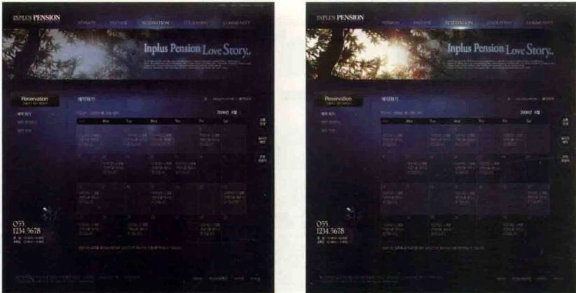
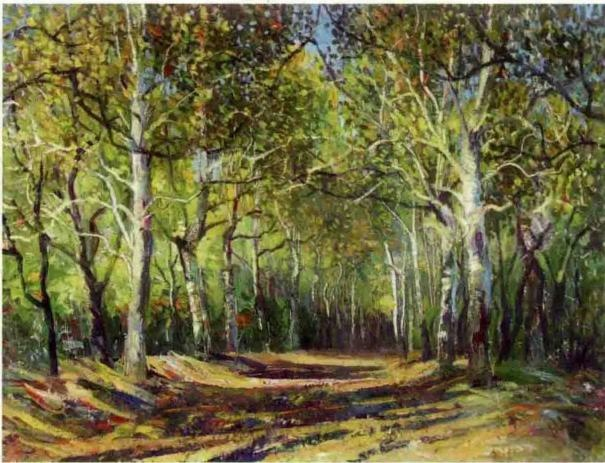
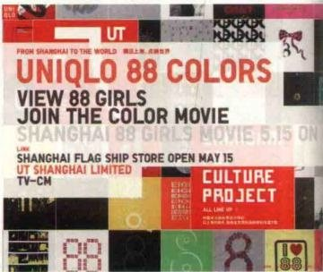
5. Source Bookshelf
Suggested reading order: 《寫給大家看的色彩書 1》 → 《色彩設計的原理》 → Albers, 《色彩感知學》 (with hands-on exercises) → Asakura, 《色彩構成》 → 《觀念之色》.
Show 26 titles
- 藝術·設計的色彩構成 - [005]寫給大家看的色彩書1：設計配色基礎 - [006]寫給大家看的色彩書2：色彩怎麼選，設計怎麼做 - [016]梁景紅談：色彩設計法則 - [053]配色設計原理 - [056]七日掌握設計配色基礎 - [058]配色設計從入門到精通 - [059]平面設計配色全攻略 - [068]美國色彩基礎教材 - [070]色彩應用：平面設計配色經典創意 - [133]黑白灰設計：摒棄有彩色的設計法則 - [242]美國視覺設計學院用書：平面設計中的繪畫、構成、色彩與空間樣式 - [342]觀念之色：中國傳統色彩研究 - [361]色彩搭配的黃金法則 - 新手配色寶典：2000個配色案例不怕你不會 - 像藝術家一樣思考之三：貝蒂的色彩 - 國際平面設計基礎教程：COLOUR色彩設計 - 平面設計綜合配色手冊 - 色彩怎麼選，設計怎麼做 - 色彩感知學 - 色彩構成 - 色彩設計：日本平面設計師參考手冊 - 色彩設計的100個亮點 - 色彩設計的原理 - 設計入門教室3：色彩設計的原理 - 設計密碼：綜合配色完全攻略6. Study Cues
- Why does a green that looks vivid on screen turn grey in print? How should you deal with it?
- Using Albers's method, make one grey square look like two different colours on two backgrounds.
- Convert a recent piece of your work to greyscale: is the hierarchy still clear?
- Explain the PCCS idea of "tone", and build a five-colour scheme within a single tone.
- Design a 60/30/10 colour scheme for an environmental brand, and explain the role of each colour.
- Give two examples of colours with opposite meanings in different cultures, and explain what this means for international brand design.
7. Each Book
Each book in the bookshelf is described below. Every title above links to its section.
藝術·設計的色彩構成
Author: Naomi Asakura
Scope. This is the colour composition textbook in a series on basic form, translated into Chinese by Zhao Yun'an. Asakura splits the course into two parts: first get to know the world of colour and its systems, then mix colours by hand and test how to create beauty and special effects with colour. The preface also warns that taste takes years to refine and cannot stop at memorising the names of systems. Colour in daily life and achromatic composition both follow this thread.
Main ideas
- Colour composition is one discipline of basic form. Its aim is to organise colour into form and to serve design practice.
- Learning has two sides: understand colours, their relationships and how colour is used in daily life; and at the same time mix colours yourself to study how effects are produced.
- The book sets out the main colour-mixing systems, including Ostwald, Munsell and the PCCS of the Japan Color Research Institute.
- PCCS starts from the perceptual red, yellow, blue and green, inserts new hues between the main hues to reach twenty-four hues, and places complementary colours (which mix to an achromatic grey) opposite each other.
- Achromatic composition works along the central axis of the colour solid, treating white and black separately first; the strong tone sits right next to the vivid tone and is used for tone-based colour schemes.
Methods
- Using the same set of shapes, choose one set of colours each by Munsell, Ostwald and PCCS, and write down the practical differences between the three systems when choosing colour.
- Sketch a twenty-four-hue wheel and mark which pairs come close to achromatic when mixed.
- Make a composition using only white, black and grey, and state clearly what white and black are each responsible for.
- Make a strong-tone colour scheme and place a vivid-tone version beside it. Compare where the strength differs when the values are similar.
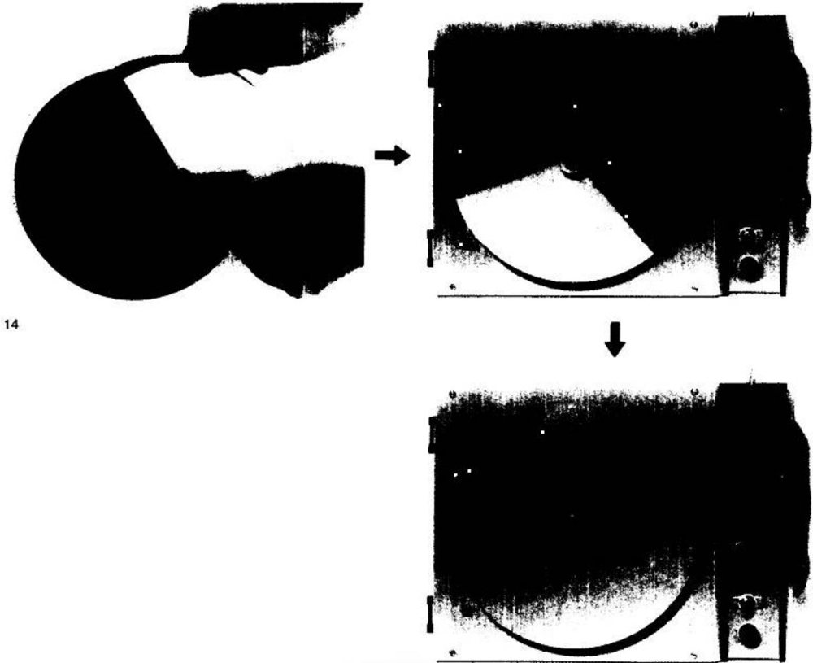
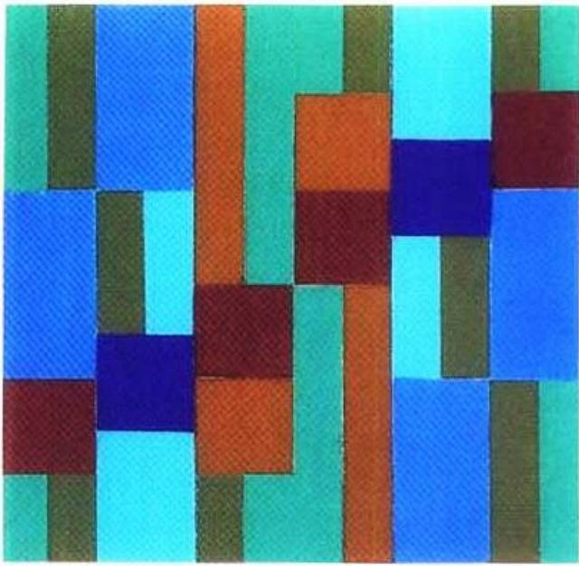
Study cues
- Which two things does Asakura ask a colour course to do at the same time? Which one is missed if you only memorise the names of colour solids?
- How do the twenty-four PCCS hues grow from the four main hues? Why are complements placed opposite each other?
寫給大家看的色彩書1：設計配色基礎
Author: Liang Jinghong
Scope. This book is about how to build colour schemes in design. Its starting point is how people see colour, not memorising CMYK or RGB values first. Liang Jinghong uses small flat pieces such as business cards to show that two colours are the starting point of using colour, and that rules only begin with three colours. Later chapters apply colour schemes to logos, illustration, layout and trend colours, and use paired feelings (steady and bright, business and leisure) as breakthrough exercises.
Main ideas
- HSB matches the order in which the eye judges colour: first hue, then saturation, and finally brightness. Look up print and screen values only after you know which colour you want.
- Two-colour combinations are the foundation. The white on a business card is not empty; it is setting off the red. Once red and black compete with each other, the white falls back into being background.
- Readers often overlook achromatic colours, but designers must know that black and white are doing work.
- Use few colours. The base colour follows the area principle, but reading psychology and the message sometimes outweigh area.
- The twelve-hue wheel is drawn as a "growing" process. People first identify colour by hue, then move on to three-colour rules and the two ends of opposing feelings.
Methods
- In Photoshop, find a specified blue using only the HSB sliders: first set the hue, then "how blue", and finally light and dark. Copy down the RGB values only at the end.
- Make a red and white business card, then add black, and write down why the white's presence weakens.
- Choose a logo, limit it to two colours, then change it to three, and record what the extra colour is responsible for.
- Take a colour set from an outfit or an illustration, apply it to a business card, and note which colour is the base colour and whether area gives way to the message.
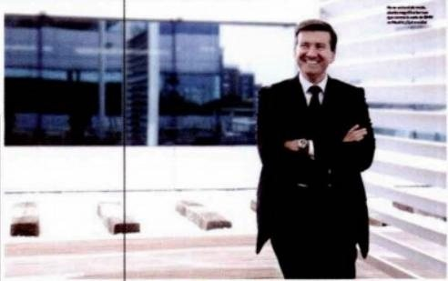
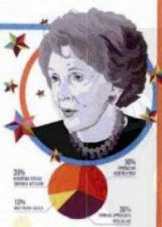
Study cues
- When you see a pair of jeans, why does Liang Jinghong think you should not first ask for CMYK values? What are the three steps of HSB?
- On the same red business card, why does white change from a "setting-off colour" into an easily overlooked background once black is added?
寫給大家看的色彩書2：色彩怎麼選，設計怎麼做
Scope. This volume splits the problem into "how to choose" and "how to use". Before choosing colours, make colour cards: start from one patch of colour and use keywords to gather a feeling into colours that can be communicated. The book states plainly that the most beautiful colour schemes are made by hand, and that neither handy tools nor written rules can replace this distilling. Only the section on using colour moves on to the job of each colour in the picture.
Main ideas
- One colour can match many feelings; only combinations of two or more colours narrow the meaning down. Write down the effect you want first, then choose colours.
- Colour cards are a necessary step in the design process. You can start from a concrete impression such as summer, then split it into nouns and adjectives, concrete and abstract, natural and cultural.
- Feelings can be summed up subjectively, but once they reach the work they still have to pass the group's sense of taste; they cannot stay as personal feelings only.
- Do not turn colour information into fixed symbols. Do not force opposing feelings into the same piece; and train your sensitivity to tell similar feelings apart.
- Not every problem is a colour problem. You can choose colours with mood keywords and colour brainstorming, but first check whether the core difficulty actually lies in colour.
Methods
- Make a set of colour cards for "summer": first list things you can do, such as viewing lotus flowers, surfing or going to the beach, then give each one a colour and write one mood keyword.
- Build your own library of colour cards. On each card, record both a concrete noun and an abstract adjective, so you do not just write "premium" or "clean".
- Take an old piece of work, mark the feelings in it that clash with each other, and cut back until only one group of similar feelings remains.
- Do a colour brainstorm: write the design intent first, then produce eight colours, and finally keep only the three that match the intent, explaining why the others cannot be used.
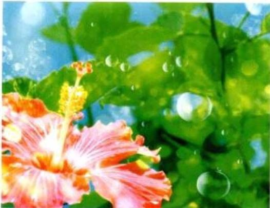
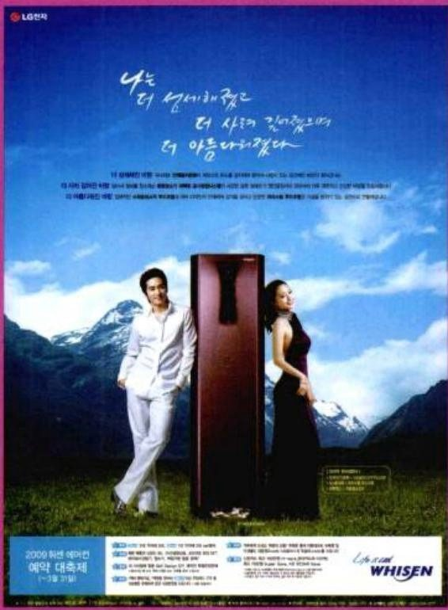
Study cues
- Why does this book put colour cards before colour scheme rules? Does "what colour is your summer?" ask you to hand in colour values or impressions?
- If one piece of work contains two opposing groups of colour feelings, how does the book suggest you deal with it? And what should you train for similar feelings?
梁景紅談：色彩設計法則
Author: Liang Jinghong
Scope. This book pulls colour out of the physiology class and back into the design class. Liang Jinghong's colour design rules are just three: balance (combination), focus (theme) and resonance (rhythm). The levels of perception run from pure white, one colour and two colours to many colours, gradients and overlays. The book also admits that individuals have colour barriers, such as being afraid to use black, high chroma or complementary colours, and offers "Train your colour" for self-study.
Main ideas
- Contrast, harmony, the colour wheel and warm and cool offer methods of study; after learning them you still cannot design. The rules restate the needs starting from the goal of the image.
- The balance rule retells contrast in terms of visual and psychological balance, and guides choosing and combining colours.
- The focus rule sets the role of each colour, linking colour to the creative theme and the theme of the image, so that it serves visual interaction and the expression of the theme.
- The resonance rule retells tone in terms of rhythm and layers, and is used to organise many colours, layers and colour groups.
- Focus can be read in layers: the first layer is the colour focus of the whole piece. Identical colours placed together echo each other and gain strength, but this does not add layers.
Methods
- Check an old piece against the three rules: is the combination out of balance, is the theme unfocused, or do the layers lack resonance? Fix only the weakest one.
- Do the same brief in five versions: pure white, one colour, two colours, many colours, gradient and overlay. Write down whether the theme becomes clearer as complexity rises.
- Find a colour you avoid (black, high chroma or complementary colours) and use it once in a small area. Record whether the barrier lies in preference or in control.
- Mark all the patches of the same colour in an image, treat them as one combined area, and then decide whether to split them up to add layers.
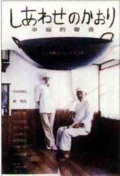
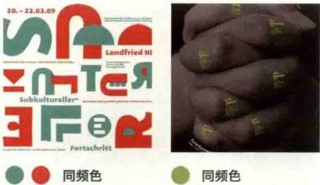
Study cues
- Which stage of the design process does each of the three rules (balance, focus, resonance) target?
- When two patches of exactly the same colour echo each other in an image, what happens to strength and to layers?
配色設計原理
Scope. This book teaches colour schemes through magazine layouts. Its structure runs "set the whole first, then choose base colours, what to do when a layout has too many colours, photo pages, two-colour printing". Each set shows before and after revisions: a white ground, light-coloured photos, short headlines and body text in ink black, set against problems such as a weak background, too many colours in headlines, colour bands that steal attention from photos, and subheads that are too bright. An interview keeps Issen Okamoto's order: image comes before colour.
Main ideas
- A natural, simple layout can be unified by a white ground, without treating the background as an empty space that still needs filling. Photos of small objects look neater when their backgrounds are kept light.
- Headlines should be short; their letter-spacing can be opened up, and their colour should follow the photo content and stay low-key so it does not break up the layout. Use ink black for body text, and support captions with a plainer colour.
- Too many colours on a headline, an over-strong colour band at the bottom, or subheads more glaring than captions all make colour itself the star, and the photos and text become hard to read.
- To unify a spread, you can turn the whole page black, reverse the text out in white, and keep only a colour that already appears in the photos for keywords.
- Issen Okamoto believes colour itself is not what moves people; image and shape come before colour. Colour comes only after the structure of the photos and the organisation of the text. Sometimes black and white is enough.
Methods
- Take a magazine spread that "somehow feels off" and fix four things: strengthen the background, reduce the headline to one colour, remove the colour band that competes with the photo, and tone down the subheads so they do not overpower the captions.
- Make two versions: a simple one on white, and one on black that narrows the keywords to a single accent colour taken from the photo. Write down which suits the subject better.
- Make a set of two-colour pages. Fix the photo layout and the text hierarchy first and add colour last, then record how much back-and-forth you would add by doing it the other way round.
- Choose a layout you want to fill with many colours. First change it to black and white to check that the image holds up, then add just one colour.
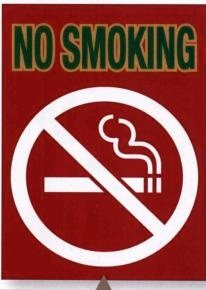
Study cues
- In Issen Okamoto's order, which step should colouring a photo page come after? Why does he say you can keep it black and white at first?
- What does each of these damage in a layout: multicoloured headlines, footer colour bands, and over-bright subheads?
七日掌握設計配色基礎
Scope. This is a colour scheme book with daily exercises. Day one wakes up your senses, then value, chroma and tone are used to explain impressions, before moving on to the five roles. The later days deal with cheerful colours, noisy colours and dark colours, and ask that the feeling of the colours match the content you want to express. The exercises ask directly which watch is more avant-garde and which colour scheme is steadier.
Main ideas
- Value forms its own grey scale: light colours feel light and brisk, dark colours feel heavy. A large value difference feels strong; a small one feels steady and elegant. Food and appetite are also affected by where light and dark fall.
- Chroma and tone are tied together. Dark tones can feel mature, while paler tones lean towards childlike. Small differences feel harmonious; large differences bring variety.
- The five basic roles are the main colour, the supporting colour (the highlight colour), the dominant colour (the background colour), the blending colour and the accent colour. The image is stable only when the roles are set correctly.
- The main colour takes the strongest colour, and its area is often best kept small. The supporting colour takes a contrasting hue; if its area grows or its chroma rises, it steals the spotlight from the main colour.
- The background colour governs the overall feeling even when its area is not large. Change the background behind the same object and the impression can change completely.
Methods
- Using the same set of snacks, make one version "mostly light colours" and one "mostly dark colours", and write down which holds up better for appetite and for elegance.
- Set a main colour and add only a small patch of contrasting colour as the supporting colour. Then enlarge that patch and record at which step the main colour loses focus.
- Put the same object in three dominant colours, and ask classmates to name three moods from the background alone.
- Group a pile of noisy colours into two tones, light and dark, or bring them into one blue range, and compare whether the neatness comes from hue or from value.
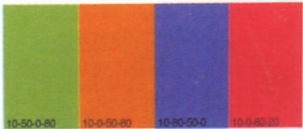
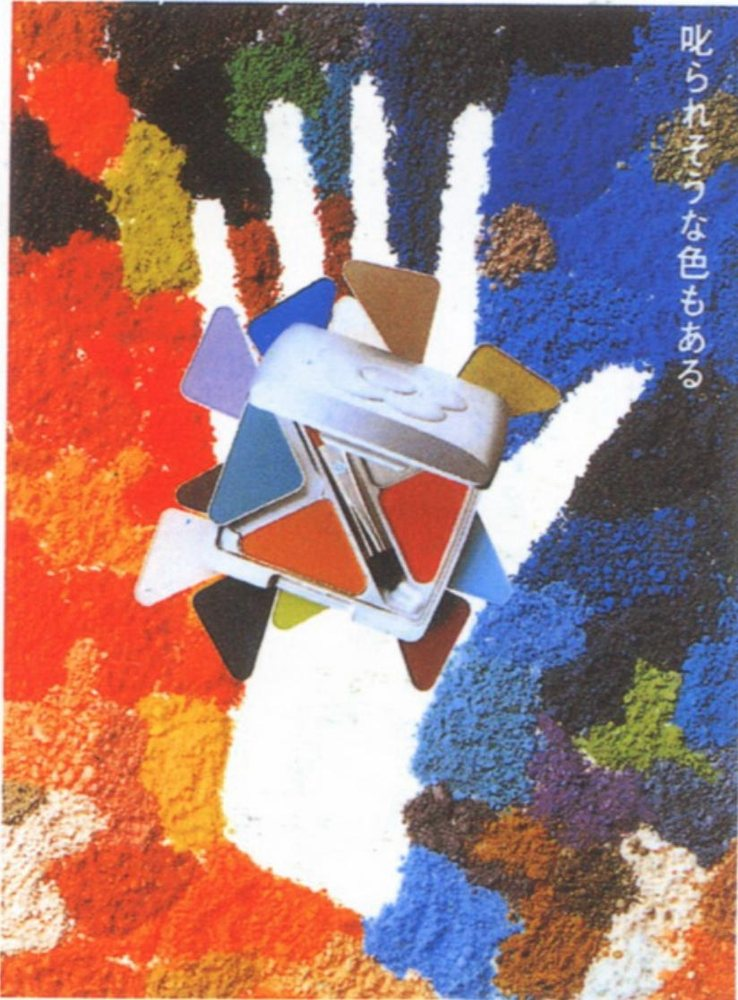
Study cues
- Of the five roles, which one governs the whole even in a small area? Which one harms the main colour as its area grows?
- The book links a smaller value difference to elegance and a larger one to energy. Using food as an example, explain why too dark causes problems.
配色設計從入門到精通
Scope. The book has a basics part and a themes part. The basics part covers colour theory and a set of colour scheme patterns you can call by name, then uses good and bad examples to teach techniques that strengthen effects, along with three kinds of colour impression: nature, daily life and art. Only the themes part moves into practice with posters, web pages, illustration, products, clothing and home interiors, taking each brief step by step from project background to finished scheme.
Main ideas
- Colour is treated as a phenomenon that combines light, object and vision. The green of a leaf depends on how much of that wavelength is reflected; when the lighting changes, the vividness of the green changes too.
- Basic contrasts include value, chroma, legibility, afterimage, advancing and receding, and expanding and contracting.
- The basic patterns can be called up by condition: same value, same chroma, monotone within one hue family, compound schemes with contrasting colours, dark and dull, bright and vivid, greyish, layered, full-hue, as well as accent colour, the red-yellow-blue triad, separating colour, area contrast and making the subject stand out.
- Many colours also need rhythm. The book uses "one makes an accent, three make a rhythm" to avoid schemes that are both busy and dull.
- The order in the case studies is fixed: background first, then step-by-step combining and adjusting, rather than collecting nice colour swatches first.
Methods
- Pick one pattern name (for example separating colour or area contrast) and make one version each as a colour wheel, a row of swatches and a product.
- Make a small multicolour sketch with only one accent and three points of rhythm; delete any extra colours or fold them into the rhythm.
- Take one impression word each from nature, daily life and art, make a scheme for each, and state whether the set is meant for a poster, a web page or packaging.
- Choose one of the book's applications (a newspaper sports page, a mineral water ad or children's home furnishings). First write one sentence stating a constraint from the project background, then build the colour scheme.
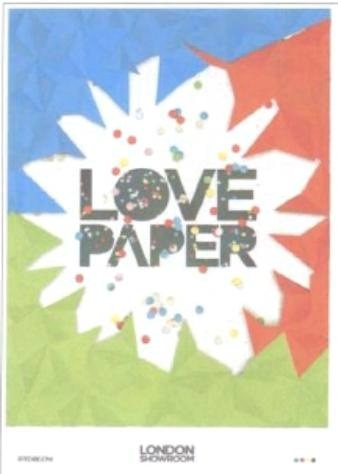
Study cues
- In this book's contents, what problem does a same-value scheme solve, and what does a value-contrast scheme solve?
- How would you apply "one makes an accent, three make a rhythm" to a poster with more than five colours?
平面設計配色全攻略
Scope. This book starts with how light becomes colour, then moves on to colour schemes in graphic design. It divides the ways we see colour into light-source colour, transmitted colour and surface colour, and divides colour mixing into subtractive mixing for print and additive mixing for screens and stages. Besides achromatic and chromatic colours, it lists special colours such as gold, silver and fluorescent colours separately.
Main ideas
- Without light there is no colour. Light given off directly by a source is light-source colour; light passing through objects such as glass is transmitted colour; light reflected from a surface is surface colour.
- In subtractive mixing the pigment primaries are magenta, yellow and cyan, and mixing all three tends towards black; colour printing adds black on top of this, giving CMYK.
- In additive mixing the light primaries are red, green and blue; mixing makes things lighter, and all three make white. Televisions and computers use RGB.
- Achromatic colours are black, white and the steps of grey, and they are colours too. Only chromatic colours have hue, and their state is set by three values: hue, value and chroma.
- Yellow has the highest value and violet the lowest. Chroma is vividness: adding white makes a colour paler, adding black makes it darker, and adding a grey of the same value lowers only the chroma.
Methods
- Find one example of the same red as a light-source colour, a transmitted colour and a surface colour, and note whether each should be produced in RGB or CMYK.
- Make a nine-step grey scale, then place a grey-green of the same value next to the middle grey, and write down that the chroma has changed but the value has not.
- Use analogous colours to make a set of logos running from wine red to dark red. In your description you may write only "warm" and "classic", and you may not add a complementary pair.
- Put high-chroma red, yellow and blue on a black ground, then double the black area, and judge whether it can still be used on food packaging.
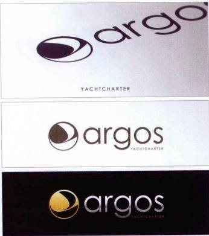
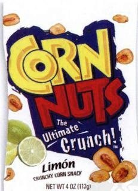
Study cues
- Is an apple in a printed piece and an apple on television a surface colour or a transmitted colour? Which kind of mixing does each correspond to?
- When you add white, black, or a grey of the same value to green, how do value and chroma change in each case?
美國色彩基礎教材
Original title: Color Basics
Authors: Stephen Pentak, Richard Roth
Scope. This is a basic colour textbook that starts from light and the eye; the Chinese translator is Tang Kaiqing. The first half covers the colour wheel, additive primaries, value, grey scale steps, inherent value and contrasts of the three attributes, as well as mixing illusions such as transparency, middle colours and plaid. Only the second half applies these exercises to two-dimensional and three-dimensional work, and discusses harmony and disharmony.
Main ideas
- An object shows a colour because its surface reflects that band of wavelengths and absorbs the rest. The blue of the sky and the red of sunset come from the different ways short wavelengths scatter in the air.
- White is the sum of coloured light, and black is its absence. Cone cells are sensitive to red, blue and green, which is also the physiological basis of the three light primaries. People with colour weakness often cannot tell red from green.
- Staring for a long time produces an afterimage. Instrument panels use red light so as to disturb the rod cells less, making it easier for drivers to look back at the road at night.
- Warm and cool come mainly from everyday associations. Colour names such as "Sandbar Harbour" are rich in poetry but poor at conveying information; naming colours by hue, value and chroma is precise.
- Middle colours can suggest mixing and transparency. Same value but different hue is another contrast that has to be practised on its own. Analogous combinations can be subtle, such as gold placed beside green.
Methods
- Make a grey scale, find the middle grey, then mark the inherent value of one hue on that scale.
- Do a transparency study: where two colours overlap, you may use only one middle colour, so that viewers can see front and back and the mixing.
- Choose three vague commercial colour names and rewrite them as sentences of "hue + value + chroma", so that classmates can roughly match them without seeing the swatch.
- In the two-dimensional assignment, make one harmonious composition and one deliberately disharmonious one, and use the three attributes to explain where the difference lies.
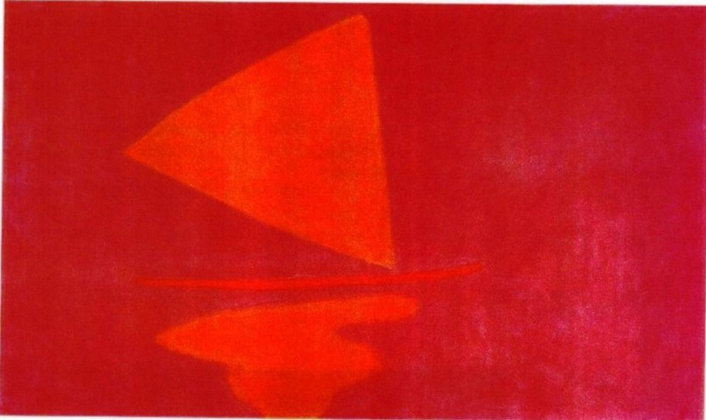
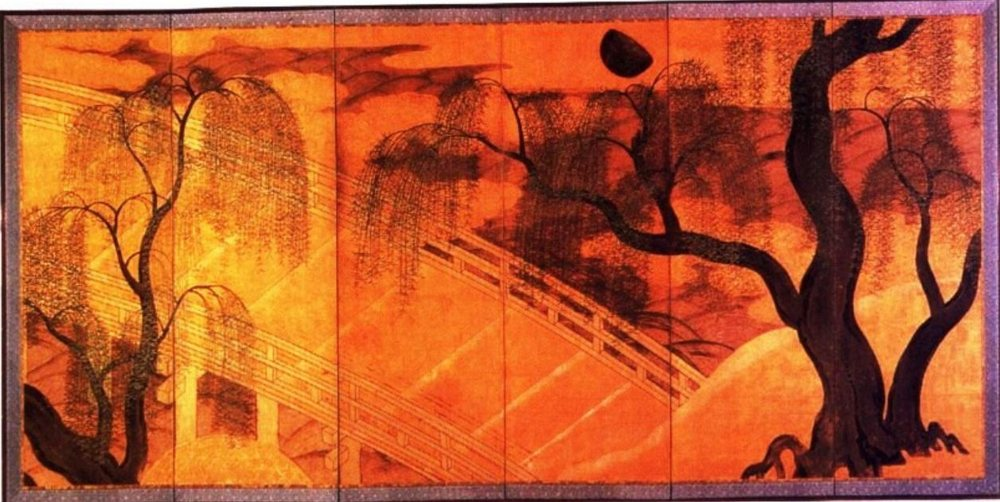
Study cues
- Why do night-time instrument panels use red light rather than lighting that strongly stimulates the rod cells?
- What is missing from a colour name such as "Bedouin tan"? Which three attributes would describe the colour precisely?
色彩應用：平面設計配色經典創意
Original title: Color Design Workbook: A Real-World Guide to Using Color in Graphic Design
Scope. This book teaches colour theory through graphic design projects, rather than leaving theory on the colour wheel. It traces the line from Newton, Goethe, Prang and Ostwald to Itten at the Bauhaus, then divides harmonious relationships into complementary, split complementary, analogous, triadic and monochromatic. The later part turns to information: how colour works like a conversation to communicate a brand.
Main ideas
- The core of colour theory is creating colour relationships that produce beauty. Colour wheels, triangles and curves are all tools for choosing colours, combining them and organising palettes.
- Newton gathered the spectrum into a colour circle and found that two opposite colours mixed together tend towards neutral. Goethe started from feeling instead, dividing warm and cool colours into positive and negative, and studied simultaneous contrast and emotion.
- Itten's twelve-hue wheel is based on red, yellow and blue, and considers both light waves and psychology. Ostwald linked harmony to psychological order.
- The types of harmony include complementary, split complementary, analogous, triadic and monochromatic, and are used to organise a palette that is both pleasant and effective.
- A brand can use a dedicated colour that appears again and again to gather seemingly unrelated images and text into one conversation. A dated colour scheme needs fresh research to be renewed.
Methods
- Using Itten's twelve-hue wheel, make one small sketch each of complementary, split complementary and analogous schemes, and write down which feels most like a "conversation" and which most like a "statement".
- Choose a brand and set one colour that must keep appearing. Apply it to three images with unrelated content, and check whether you can still tell they come from the same organisation.
- Find an industry colour scheme you think is dated, write down where its associations come from, then create a new combination that still conveys the same information.
- Convert an on-screen RGB design to CMYK for print, and record which colour's relationships change after colour separation.
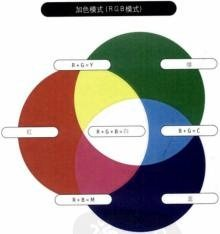
Study cues
- How do Goethe and Newton differ in where they start with colour? Which concern does this book want designers to inherit?
- For complementary, split complementary and monochromatic schemes, give one brand character you can imagine for each.
黑白灰設計：摒棄有彩色的設計法則
Author: Xu Xianhong
Scope. This book deals specifically with how to keep designing after giving up chromatic colour. Xu Xianhong writes about "between black and white", from the definitions of white, black, and black with white, to the Daoist idea of "counting the white as black" (ji bai dang hei) and three kinds of beauty: solid and void, emptiness, and naturalness. The second half is a large collection of monochrome brands, packaging, albums and business cards, used to check the rules from the first half rather than to introduce the colour wheel again.
Main ideas
- White is all coloured light entering the eye. It has the highest value, no hue and no warmth or coolness, so it can sit beside any colour; white with black is seen as the extreme of colour contrast.
- Using white does not equal minimalism, and minimalism does not depend on any one colour; empty space does not have to be painted white either. Black can be solemn and elegant, and it sets off bright colours.
- Chinese ink painting uses "ink divides into five colours" (dry, wet, thick, light and burnt) to create a sense of colour without colour, relying on point, line, plane and layers of black, white and grey.
- "Counting the white as black" treats the places without strokes as part of the form too. The book links the way of black and white to Laozi's "know the white, keep to the black".
- A monochrome brand can keep only the necessary information. A strikethrough line or a large area of black can serve as both identity and idea, for example removing what is unnecessary.
Methods
- Change a poster that was originally in colour into black, white and grey only, and require the empty space to do as much shaping work as the strokes.
- Make a chart of layers using the five blacks (dry, wet, thick, light and burnt), then complete a logo using only three of them.
- Make monochrome packaging for a brand with only the necessary information on it, and ask someone to read the brand name within three seconds.
- Write a short explanation: is your white "no design", or a calculated shape? Point to one empty space that would fall apart if it were filled in.
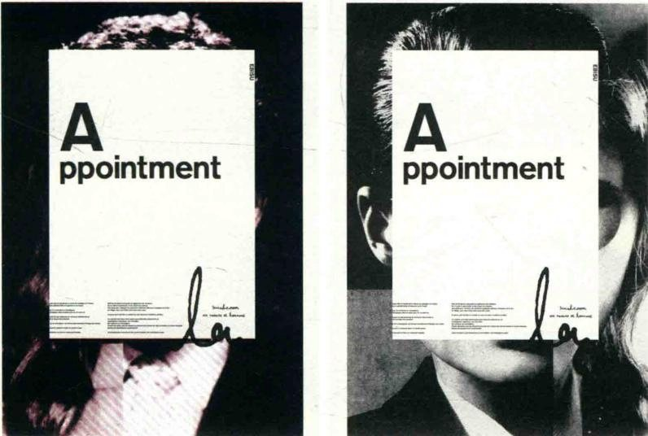
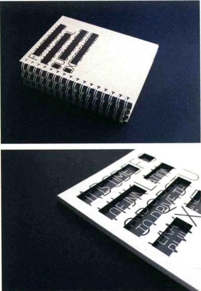
Study cues
- In a layout or in calligraphy, what does "counting the white as black" ask you to treat empty space as?
- Why might "using a lot of white" still not be minimalism? Give one approach from the book that achieves identity with black and white alone.
美國視覺設計學院用書：平面設計中的繪畫、構成、色彩與空間樣式
Original title: Drawing for Graphic Design: Understanding Conceptual Principles and Practical Techniques to Create Unique, Effective Design Solutions
Author: Timothy Samara
Scope. The original English title of this book is Drawing for Graphic Design. It is about drawing in graphic design, and colour is only one of its means of creating space and style. Samara treats drawing as the meeting point of observation, craft, narrative and intuition, used to train the eye rather than to hand in a rendering. The structure moves through discovery, process, ideas and work, and the syntax runs from underlays and lines to blocks of colour and brushstrokes.
Main ideas
- Drawing from life trains you to analyse shape and construction; non-pictorial abstract exercises force you to deconstruct first and then reconstruct, and carry compositional confidence into other media such as photography.
- Type is drawing too. From the strokes of a small logo to the setting of long texts, it is all abstract line. Hand-drawn lettering can be remade to suit the function of the medium, rather than only picking from a font library.
- Drawing is also narrative: it can show the qualities of objects, call up memories, or use images to discuss problems.
- Even when a concept sketch ends up only as the base for lettering or a photo, it should leave behind an energy that the final version must keep.
- Blocks of colour and brushstrokes are practised within this syntax. A network of dots or an arching pattern can draw intangible things such as sound or gathering as a visible order.
Methods
- Draw a real object from life, then make a non-pictorial reconstruction using only abstract shapes, and write down the extra compositional decisions in the second one.
- Hand-draw the letters for a headline, without allowing yourself to pick a ready-made typeface, and explain how the strokes suit this medium.
- Make one "underlay" each with blocks of colour and with brushstrokes, so that the photos or text added later have an energy and direction that already exist.
- Draw a process of sound or of a storyline as a distribution of dots or an intermediate invention exercise, so that others can see the sequence.
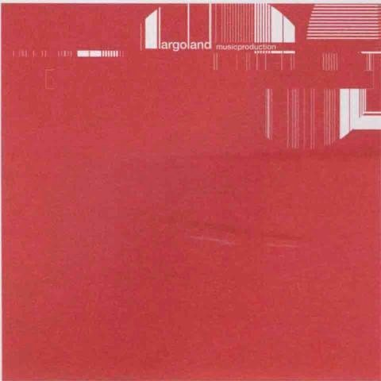
Study cues
- Why does Samara want designers to make "non-pictorial" work? What do it and drawing from life each train?
- What kind of problem does hand-drawn lettering solve that picking type from a font library cannot?
觀念之色：中國傳統色彩研究
Scope. This is a study of traditional Chinese ideas about colour, not a colour scheme handbook. The author argues that traditional colour is first of all a purposeful system of ideas running through dynasties, ranks and daily life, not just a few historical swatches. The book traces the forming of colour thought, proper and intermediate colours, and the colours of each era, back to the black and white, and black, white and red, of the pre-Qin period, and on to the five directions and the five colours.
Main ideas
- Contemporary design easily treats Chinese colour as fragments of a broken-off history. What the book wants to restore is the ideas, and the colour events those ideas produced.
- If the discussion looks only at the five proper colours of the five directions, qing (blue-green), chi (red), huang (yellow), bai (white) and hei (black), it overlooks the equally important intermediate colours. Under certain conditions, proper and intermediate colours can swap roles.
- The 《禮記》 already says "upper garments in proper colours, lower garments in intermediate colours". Proper colours are like a fairly stable structure, and intermediate colours are like words filled in according to context; this is where meaning happens.
- Colour studies are divided into four kinds: principles, application, thought and general surveys. Early Chinese attention to colour took a different path from the optical colour science that followed Newton.
- The colours of each era were shaped by many interacting factors, including the absorption of foreign colours. The colours of state carriages, banners, horses and ceremonial robes were rules of rank and purpose, not free choices.
Methods
- List the five proper colours of the five directions, then find five intermediate colours in ritual codes or literature, and state whether they were used at the time on upper garments, lower garments, carriages or banners.
- Choose one dynasty's dress-colour regulations and draw a table of "who must use which colour on which occasion", rather than drawing a modern colour wheel.
- Compare "the five colours" with "the variations of the five colours are more than can ever be seen": explain in your own words what you lose by memorising only five colour names.
- Find a design that is called "Chinese colour" today, and work out whether it uses historical swatches or the idea of rank behind proper and intermediate colours.
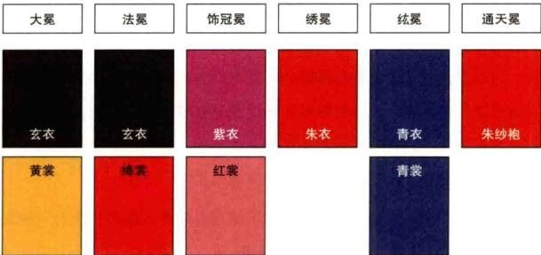
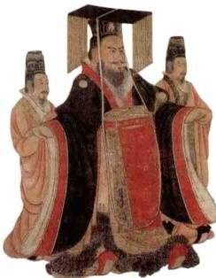
Study cues
- Why can remembering only qing, chi, huang, bai and hei not bring back the colour life of Chinese tradition?
- From at least when does "upper garments in proper colours, lower garments in intermediate colours" show proper and intermediate colours entering the institutions? Can their roles be swapped?
色彩搭配的黃金法則
Author: Hiropon Tsuge
Scope. This is a colour scheme book for beginners. The opening chapter fills in how colour is formed, associations, the three attributes and the imagery of tones; each of the four chapters after it uses before-and-after comparisons. The four chapters have separate tasks: one colour and two colours to limit the number of colours, unifying through harmony, strengthening through eye-catching contrast, and creating imagery with colour. Only the appendix covers two-colour and spot colour methods in Illustrator and Photoshop.
Main ideas
- Seeing colour requires light, an object and an eye together. Colour divides into light-source colour and object colour, and object colour further divides into transmitted colour and reflected colour.
- Limiting the number of colours can make the impression stronger. One-colour design is used to make shapes, text and curves stand out; by changing the density or adding texture, one colour can also become many layers.
- Two-colour designs can be unified through warm colours, cool colours, value, hue, chroma, complements or overprinting spot colours. A full-colour image can also be split into two colours.
- Ways to unify include same-hue colours, analogous colours, a single tone, gradients, repetition, a centre of gravity, white and a shared colour.
- Strengthening relies on the power of neutral colours, white plus black, making the main subject stand out, advancing colours, using black and white to support colour, separating colours, and using many colours for richness. The imagery chapter matches these methods to luxury, sport, cuteness, seasons and countries.
Methods
- Make a one-colour poster that looks layered only by changing density and adding one texture. Then make a two-colour version, choosing either complements or overprinted spot colours.
- Take a "before" sketch with chaotic colours and unify it using only same-hue colours or a single tone, keeping the original shapes.
- On an image that is already unified, add only one advancing colour or one patch of black, and write down whether the main subject is strengthened or broken up.
- Make a set of low-value warm colours and dark tones for autumn, and note that it should make people think of red leaves, not spring.
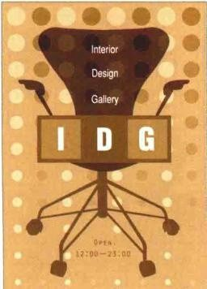
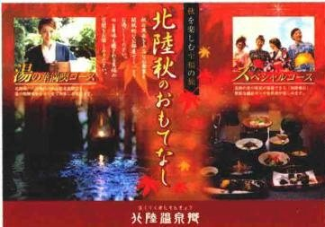
Study cues
- How can a one-colour design look as if it has many colours without adding any hues?
- Unifying colour and strengthening colour are consecutive chapters in this book. Give one specific technique from the book for each.
新手配色寶典：2000個配色案例不怕你不會
Scope. This is a casebook compiled by the mcoo Colour Research Centre, arranged chapter by chapter by colour family: red, orange, yellow, green, blue, indigo, violet, and finally black, white and grey. Each colour first gets a personality word (such as the boldness of magenta or the refreshing feel of mint green), followed by design tips. The general introduction at the front takes up only a short section, covering order, harmony, and paired feelings such as the seasons, expensive and cheap, and childlike and adult.
Main ideas
- We see an object's colour because light is reflected and absorbed. White light is treated as a mixture of seven colours, and the parts of the spectrum beyond visible light are a separate issue.
- Colour order and colour harmony each have their own meaning and methods, and they come before the thousand-plus colour name examples that follow.
- Emotional colour schemes are arranged in pairs: calm and aggressive, natural and artificial, gorgeous and plain, childlike and adult, sweet and cold, expensive and cheap.
- Each colour name comes with a fixed personality description. Orange is vivid and lively, but you must control both the colour combination and the area so it does not lose this nature.
- For subjects such as food, colour should help create a "juicy" feeling, and the personality of the colour family must match the feel of the item.
Methods
- Choose one colour name each from red, orange, green, blue and violet, copy only the book's personality word, and find an existing design that matches that word.
- Make an orange food image. First make it look "full of juice", then write down whether its nature would turn noisy if the area were enlarged.
- Choose a pair of feelings (for example expensive and cheap), make a three-colour scheme for each, and do not allow the two schemes to share a hue.
- After working through the examples, check with the harmony methods at the front of the book: does the set of colours have order, or is it just a pile of colour names?
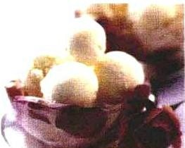
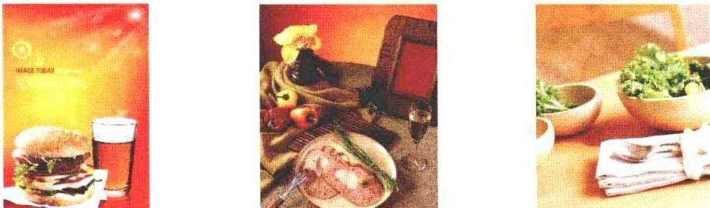
Study cues
- Why is this book's table of contents arranged by colour family rather than by design field? When using it, should you look up the personality word or the colour value first?
- When orange is used for food, what two controls does the book remind you of?
像藝術家一樣思考之三：貝蒂的色彩
Original title: Color: A Course in Mastering the Art of Mixing Colors
Author: Betty Edwards
Scope. This is a painting-oriented colour course, translated into Chinese by Zhu Min. Edwards divides colour knowledge into three parts: how the brain processes drawing and colour together; paints, brushes and exercises in seeing value with the colour wheel; and harmony, light, simultaneous contrast, colour in nature, symbolism and personal preference. She quotes Itten: if you cannot create masterpieces in ignorance, you should study colour. At the same time she rejects Keats's fear that knowledge will "unweave a rainbow".
Main ideas
- Colour is the sensation produced in the viewer's eye, brain and mind after light falls on a surface. The yellow of a lemon belongs to this system, and different people may not see exactly the same thing.
- Intuition can make choices, but intuition plus knowledge is stronger. The book's goals are observing, using, and mixing the hardest thing of all: harmony.
- Value must be looked at on its own. When describing a colour, state its value and chroma together, for example light red, dark red, or a mid-value blue-green.
- After harmony, you also have to deal with light, colour constancy and simultaneous contrast, and then look at how nature has already worked out these relationships.
- Symbolic meaning and personal preference must be understood separately. Knowing your own habits with colour stops you from mistaking preference for the only correct harmony.
Methods
- Choose a set of paints and adjust only value, not hue, making at least five steps, and label them with "value step X, chroma step Y".
- Paint two colours side by side and use simultaneous contrast to make the same grey look different, then write down which surrounding colour is doing the work.
- Paint a small patch of a natural object from life. Mark the value first, then decide the hue, and check whether you jumped straight to a colour you prefer.
- In one paragraph, list three colours you use often, compare them with the book's table of symbols, and separate which are habits and which are required by the brief.
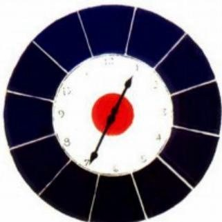
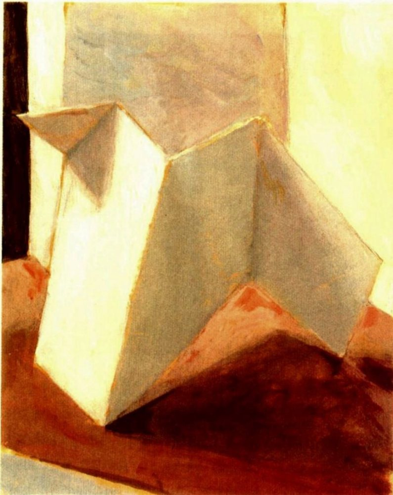
Study cues
- How does Edwards respond to the idea that "knowing too much colour theory takes away the joy"? When does she think ignorance is enough, and when is knowledge needed?
- Why does she ask you to see value with the colour wheel, rather than just memorising the names of hues?
國際平面設計基礎教程：COLOUR色彩設計
Original title: Basics Design 05: Colour
Scope. This basic course treats colour as a tool of graphic design: to attract, to guide, and to convey information through cultural associations. Its structure moves from basics, techniques and colour modes to applications and symbolism, and each example comes with the client, the studio and a colour summary. The colour reference pages list the moods of common colours, but warn that these associations differ between countries and cultures and cannot be used as a global guide.
Main ideas
- When we first see something, colour is often the first element we remember. Associations are shaped by culture, psychology, age and preference, and designers use them to predict how viewers will respond.
- Technical vocabulary (value, tone, saturation, colour mode) is for talking with designers, printers and clients, not just for exams.
- RGB corresponds to the three primaries of light and is used for television and electronic screens. You need to choose the right mode for the job and calibrate, so the result is close to what you imagined.
- One colour can carry several layers of mood words: red, for example, runs from excitement and safety to seduction, and yellow from hope to warning. Creative work can go beyond this chart.
- The examples stress how a small number of colours work: a blue main body plus two gradients, a touch of orange on a large field of white, or green added to a blue seen as conservative to warm it up.
Methods
- Write a three-line colour summary for one of your small projects: who the client is, what mood is wanted, and which colours were actually used. Compare it with how the book's examples are written.
- Choose a colour from the reference pages and write down the book's associations, then write a different association from your own culture, and explain why the book's cannot simply be applied.
- Redo a "Coil"-style exercise: one main colour plus two gradients, with the colour wrapping around the subject rather than being spread evenly.
- Mark the same design for two modes, print and screen, and list the colour that must change.
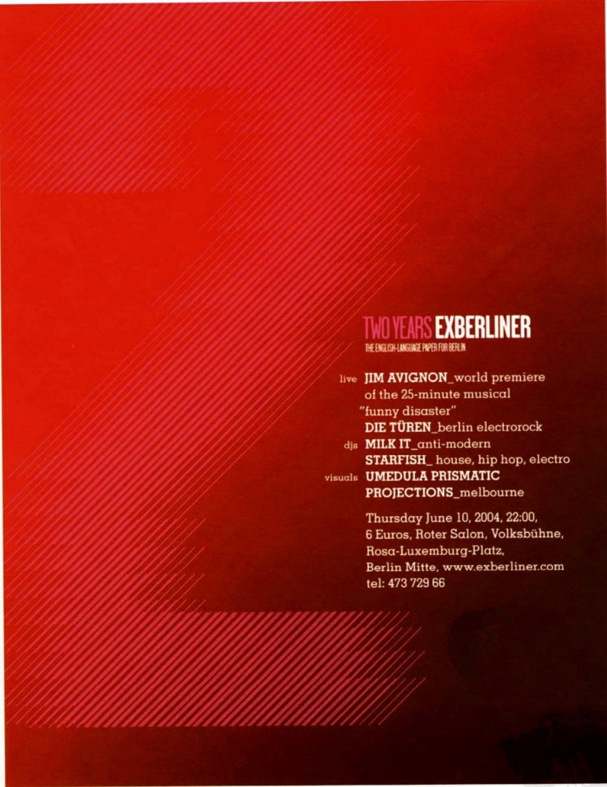
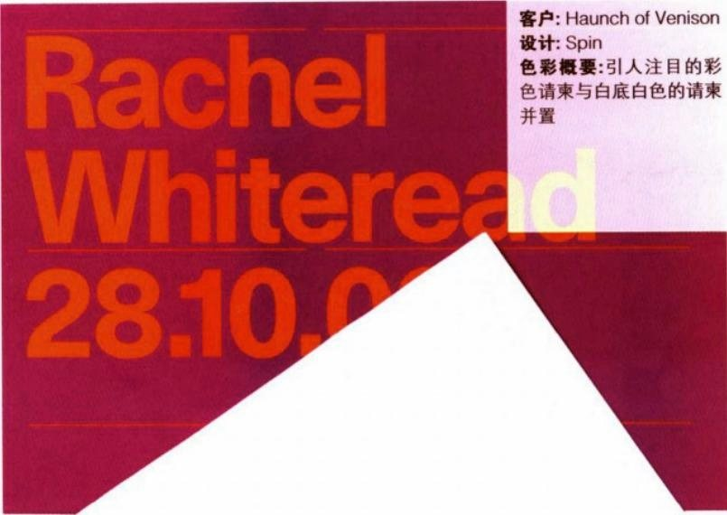
Study cues
- Why does this book insist that every example states the client, the studio and a colour summary?
- When can the mood words on the colour reference pages not be used directly? Which example in the book deliberately changes a colour's fixed impression?
平面設計綜合配色手冊
Scope. The first half of the handbook is about understanding colour: what colour is, the three attributes, contrast and combination. Only the second half covers colour plans and practical examples, with examples as specific as education, real estate, technology and personal web pages. It keeps separating "a colour" from "colour": a colour name on its own has no value; value appears in its relationship with the environment and the space.
Main ideas
- Colour is the effect of light stimulating the eye and then reaching the visual centre of the brain. Only recombining two or more colours for a purpose counts as colour composition.
- What we usually call "a colour" is not yet colour. A colour must interact with other colours and with space in a specific environment to form colour relationships. Red can mean celebration or danger, depending on the surrounding colours.
- In 1666 Newton used a prism to split light into seven colours. Visible light runs from about 380 to 780 nanometres, with ultraviolet and infrared beyond. Different wavelengths correspond to different colour sensations.
- Light-source colour is the colour of the light from a luminous body; object colour is the sensation that enters the eye after the light is absorbed and reflected by an object. Full-spectrum light contains all wavelengths; monochromatic light has only one.
- Each chroma key has its own character, but once the hue key and value key change, the psychological effect of the same chroma changes too.
Methods
- Put the same red into two settings (next to a festive object, next to a danger sign), and write down that its "colour" has not changed but its "colour relationship" has.
- Draw a band of visible wavelengths and mark what your eyes cannot see beyond the red end and the violet end.
- Choose a type of web page (education, real estate or technology). First write down the colour relationship this type needs, then build the colour scheme, rather than starting with a colour name you like.
- Make two images with similar chroma, changing only the value key, and ask others whether the mood changes too.
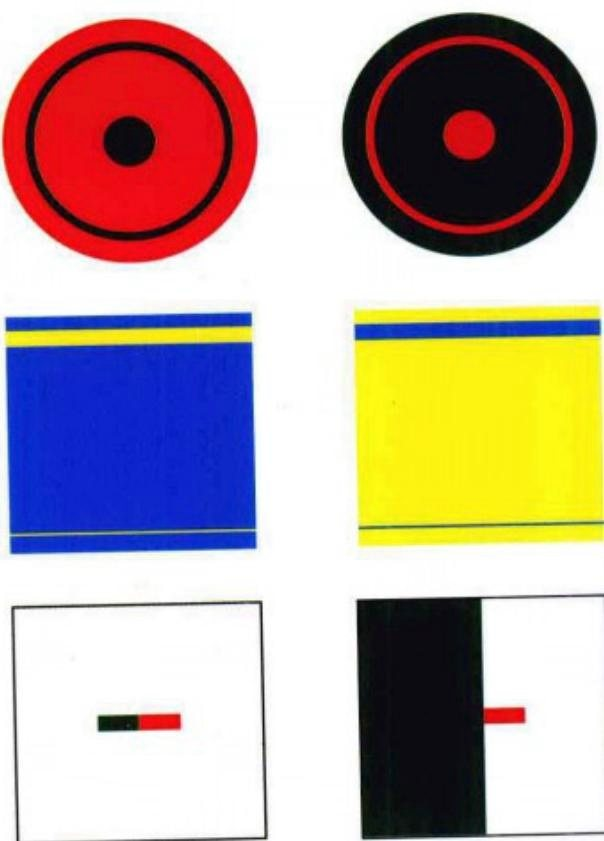
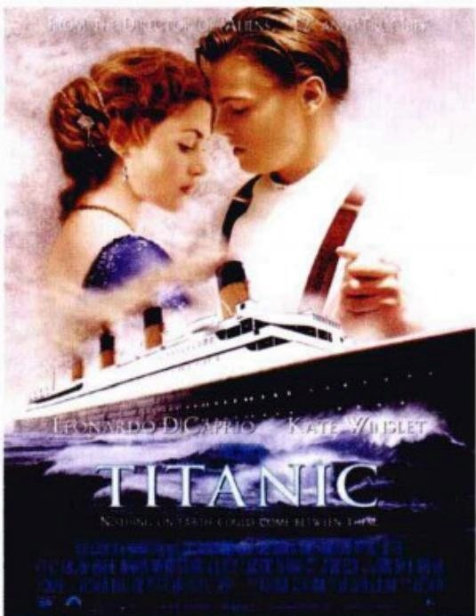
Study cues
- Using the book's example, explain why the "colour" red on its own cannot decide between celebration and danger.
- What is the difference between light-source colour and object colour? When white paper turns yellow under yellow light, which one has changed?
色彩怎麼選，設計怎麼做
Scope. This volume reduces every colour problem to two stages: whether you chose correctly, and whether you use the chosen colours brilliantly. The first half is still colour cards, mood keywords and colour brainstorming; the second half uses a "colour balance scale" to handle the image, setting the main colour, supporting colour, dominant colour, blending colour and accent colour, and discussing area, centre of gravity, left-right face-offs and territory. A chapter on culture questions fixed impressions, such as whether the sea can only be blue.
Main ideas
- Choosing colour means linking feelings to colours. Using colour means controlling relationships: balancing, adding a little lift, deleting colours that damage the image, and building a system.
- Be careful with colours in the brand area. The balance scale can be used again and again to swap colours, align with the client's intent, and tighten the details.
- The main colour should raise the appeal; the supporting colour gives support; the background is the dominant colour; the blending colour softens anything that drifts loose; the accent colour makes the image lively. Many colours are not necessarily truly many colours.
- Distribution decides the centre of gravity: top and bottom show the colour's weight, while left and right can be set up as a face-off. There are also duotones, cross-shaped contrasts, low colour quantity against high colour quantity, differences of area, and rhythm.
- Large areas of dark colour lean towards steadiness; large areas of light colour lean towards liveliness. However many colours there are, they can be grouped into a few large groups by colour tendency. Complex relationships suit dreamlike or eye-catching effects, and must match the meaning you want to express.
Methods
- Make a colour balance scale for an image whose colours are already chosen: list the brand colours to keep, the lift colour to add, and the one colour to delete.
- On one layout, mark the main colour, supporting colour, dominant colour, blending colour and accent colour. Add whichever is missing, and do not use the strongest colour for all five.
- Make one version with a top-bottom distribution and one with a left-right distribution, and write down where the centre of gravity is and whether it has turned into a face-off between two armies.
- Choose a fixed impression (the sea equals blue, or rare equals expensive). Make one version following convention, then one that breaks it, and state whether the break is for talking point or for culture.
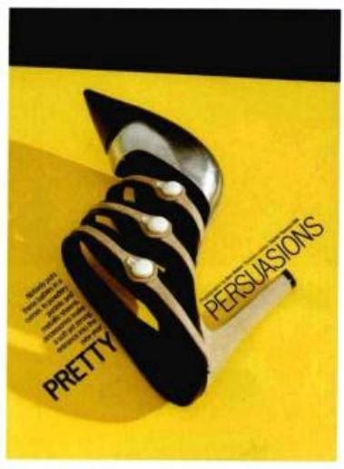
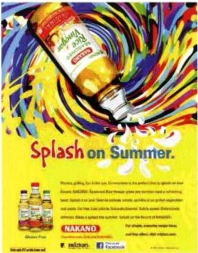
Study cues
- What does each of "choosing correctly" and "using brilliantly" ask you to deliver? Which two actions will the colour balance scale force you to take at least?
- Why might a multicolour design still not be multicoloured? What role does colour tendency play here?
色彩感知學
Scope. This book does not teach you how to make colours look good together. It teaches you to see your own seeing. The author argues that when colour theory loses touch with making, it should step back to an earlier question: what a person actually feels equals the facts plus physiology and psychology. The method is to set limited conditions for each exercise, to use experiment in place of system, and to ask readers to look at the image first and read the text afterwards. Newton recorded the objective existence of colour; Goethe recorded the subjective creation of the eye. Both show that the colour in the eye is no longer the colour as it really is.
Main ideas
- Language easily makes aesthetic experience sound mystical. These exercises avoid beauty and are used to reflect on subjectivity, forcing viewers to see both the object and themselves.
- What you feel now depends on what you felt just before and what you are about to feel. If one hand gets used to cold water and the other to hot water, and both then go into warm water, they feel different temperatures. Illusions in colour cannot be ignored either.
- Physically equal mixing does not automatically become visually equal steps. Evenly spaced colour steps need unequal amounts of paint.
- The exercises cover: the range of colour change, the direction and degree of change, colour texture (touch within sight), a colour disappearing from the field of view, the illusion of fluting, the illusion of layering, dissolving edges, and light and shadow.
- Non-figurative geometry can also suggest space. For example, a colour patch gets brighter the closer it is to the light source, and a stretched shape carries a spatial logic of its own.
Methods
- After the hot-and-cold hands analogy, make a colour version: stare at a strong colour first, then look at a neutral colour, and write down where the lingering sensation comes from.
- Mix a set of greys or single-hue steps that you think are evenly spaced, then adjust them until they look evenly spaced. Record why the paint cannot be added in equal amounts.
- Complete one sheet each of "a colour disappears" and "dissolving edges". Write the conditions on the back, and let others look first and read the conditions afterwards.
- Use non-figurative colour patches to show "brighter closer to the light source". Do not draw a light bulb. Ask classmates to point out which side the light is on.
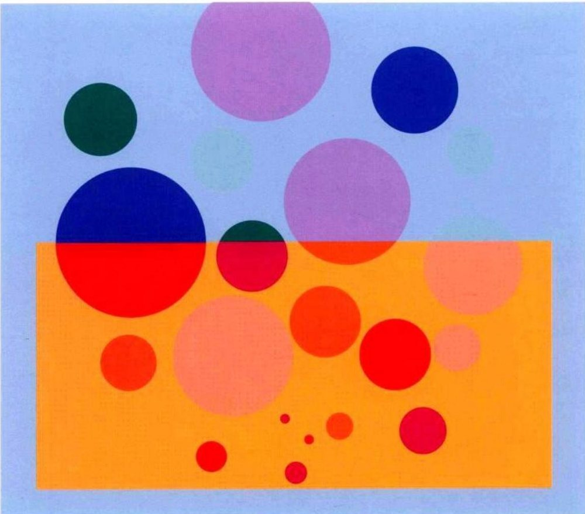
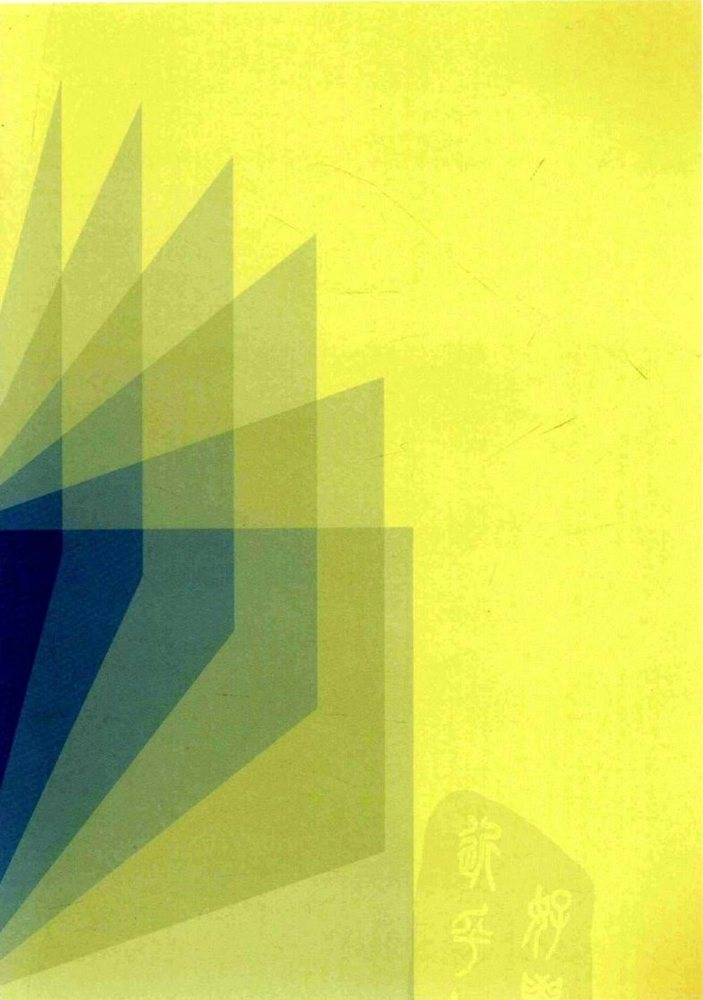
Study cues
- Why does the book say the exercises do not discuss beauty? Which part of "what you actually feel = facts + physiology/psychology" are you asked to write down in your assignment?
- Why can you not make colour steps that look evenly spaced by mixing equal amounts of paint?
色彩構成
Author: Cui Shengguo
Scope. Cui Shengguo's textbook starts with the meaning, definition and teaching requirements of colour composition, then moves on to light and colour, object colour and the three attributes of colour. It gives the wavelength range of visible light, and uses shop windows, lighting, metal products and posters to show that objects have no colour of their own: the colour you see is decided by the surface and the light falling on it together. The later contrast exercises ask you to work freely within the overall colour relationships, not to apply formulas.
Main ideas
- Colour needs a light source, an object and normal visual perception. White light is a mixture of seven single colours of light. Red has the longest wavelength and the lowest refractive index; violet is the opposite.
- Amplitude corresponds to lightness and darkness; wavelength corresponds to the kind of coloured light. Visible light runs from about 380 to 780 nanometres. Infrared and ultraviolet can only be seen with instruments.
- Object colour comes from the way a surface absorbs and reflects light. The same surface looks reddish orange under yellow light and reddish grey under green light. When the coloured light and the object colour are complementary, the result tends towards blackish grey. No colour that you see under white light will turn white under coloured light.
- Local colour is our fixed idea of what things look like, such as red fruit or a blue sea. It helps us recognise things, but it is not a paint that the object carries.
- Contrast can be handled imaginatively. A full range of hues suits a rich, showy effect. In a poster, the meaning of the forms and the colour must work together, for example a yellow foetus, green ecology and blood-red animals.
Methods
- Light the same red object with three light sources (white, yellow, green), or simulate this with coloured paper. Record the colour you see each time, and explain which one comes close to the blackish grey of complementary colours.
- Draw two versions of a metal product, changing only the colour reflected from the surroundings, not the shape of the product.
- Make a full-hue contrast study. First write down the overall colour relationship you want to keep, then add variation within it. Avoid spreading all twelve hues evenly.
- Make a public service poster in which the meaning of the forms and the colours must explain each other. Write down what each colour is arguing for.
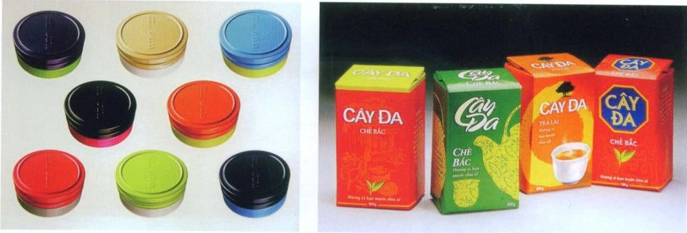
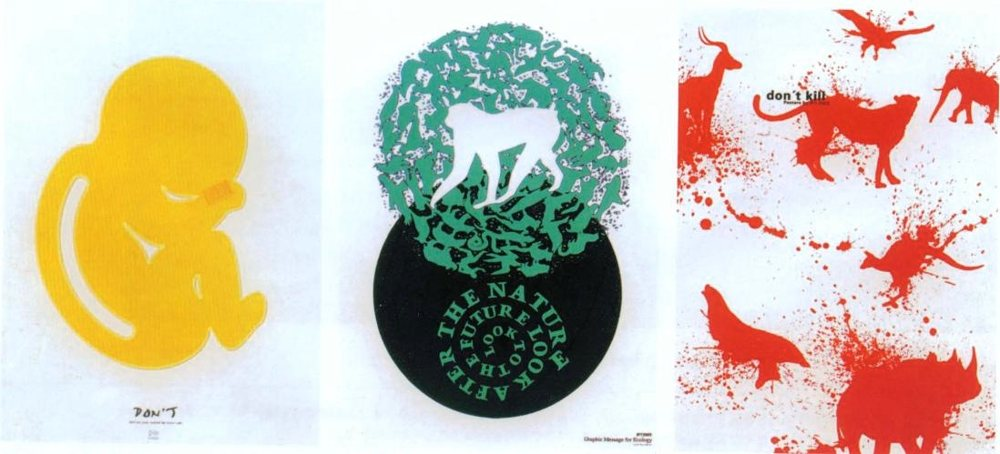
Study cues
- Why does Cui Shengguo say that objects have no colour of their own? Under yellow light and under green light, which way does the same surface shift?
- Local colour helps us recognise things. Which should go into an observation record: local colour, or "the object colour as changed by the light source at this moment"?
色彩設計：日本平面設計師參考手冊
Scope. This handbook has two parts. The first uses short texts with illustrations to cover colour and light, the colour wheel, HSB, web-safe colours, CMYK and RGB, and lightness. It gives whole pages to the extreme values a single colour holds in a culture, red for example. The second part starts from software. Using before-and-after edits in Photoshop, InDesign and Illustrator, it teaches essential settings such as saturation, spot colour inks and curves.
Main ideas
- Without light you cannot tell colours or shapes apart. The brain combines the reflected colour information with what it knows from objects it has met before, and only then recognises "a purple bottle".
- Newton split white light into a spectrum. Visible light is electromagnetic radiation of about 380 to 780 nanometres; the shorter the wavelength, the higher the energy. Beyond the red end lies infrared; beyond the other end lies ultraviolet.
- In Japanese, aka, shu, akane, hi and ni are not the same red. Vermilion (shu) can stand for divine power and wealth, but has also been linked with blood and prisoners. Signal red exists only to stand out.
- In design, colour is often seen first. The job of the culture pages is to understand these extreme impressions; the software pages are there to get the colour accurate.
- When adjusting saturation, watch the preview and stop; too much looks unnatural. The curves for a spot colour (such as DIC) and for black ink should be adjusted separately, so that the image becomes softer rather than just dirtier.
Methods
- Write a short user guide for "red". It must include both of the opposite associations in the book (sacred or wealthy, and blood or warning). Then decide which side your design stands on.
- Place three objects in a description of a darkroom. Write down whether, without light, you lose colour or shape, and how the two are lost together.
- Raise the saturation of a landscape photo in Photoshop. Stop at the point where the sky still looks natural, and note what goes wrong if you push further right.
- In your layout software, adjust one curve for black ink and one for a spot colour. Compare darkening only the black with also adjusting the spot colour: which looks softer?
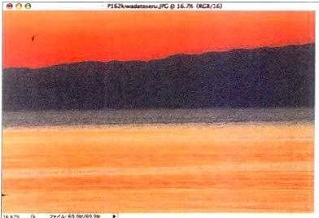
Study cues
- What are at least two contradictory cultural associations of red in the book? And what does signal red exist for?
- Adjusting saturation and adjusting spot colour curves each prevent which kind of "unnatural" result?
色彩設計的100個亮點
Original title: 100 Bright Ideas for Colour
Scope. The 100 bright ideas in this book are ideas for colouring rooms and objects, not for on-screen colour schemes. It moves quickly from "what colour is, how to choose it, how to mix it" to tools: MDF board, primer, paint, varnish, brushes and masking tape. Each idea states the rough working time and materials. Projects include a chequered wall, a distressed table, coloured washes, fabric squares, a dragged wall finish and hand-painted cushions.
Main ideas
- Set the base colour of a room first. Furniture, doors and windows are the next layer. They are usually stronger than the base colour and are there to complement it, not to overpower it.
- A chequered wall uses masking and varnish to separate matt from gloss. For a distressed table, paint it white first, then leave a band of the base colour showing 2 cm in from the edge. The second colour must be thin enough to let the white show through.
- A coloured wash can be made by mixing wallpaper paste with paint. After brushing it on, wipe it with a cloth to blend the brushstrokes, or leave streaks of texture on purpose.
- Dragging uses a glaze mixed from coloured paint, glaze and water. While it is wet, drag a brush through it to make a woven texture. A wall must be finished in one go.
- You can print colour onto fabric yourself. Orange with lemon yellow, a yellow chair, an old radio and gerberas create nostalgia with objects rather than with a colour wheel.
Methods
- Write two layers of colour for a room: the base colour, and a stronger colour for furniture, doors and windows. Explain why the second layer is still subordinate to the first.
- Simulate the distressed table process on paper: white base, an edge band, a thin second colour. Write down what you lose if the second colour is painted too solidly.
- Make a small dragged or wiped sample. Note that it must be finished while wet, and record the working time.
- Use three ready-made objects (a chair, an appliance, flowers) to set up a nostalgic corner. Photograph or draw them first, then work out the colours they share, rather than choosing colours first and then shopping.
Study cues
- Why do the book's "bright ideas" list tools, working times and drying times? How is it used differently from a colour swatch book?
- What kind of time limit in the process do the distressed table and the dragged wall both stress?
色彩設計的原理
Scope. This book first deals with something that is easy to skip: how to talk about colour. "Bright red", "blue like the sea" or "overcast grey" may call up a different image for the listener than for the speaker. Screens, print, time, lighting and culture also make the same colour look different. Only after sorting out how to express colour does the book move on to schemes where hue, lightness or saturation is kept consistent, and to complementary colours and the drift of fashionable colours around the colour wheel.
Main ideas
- A colour does not have a single appearance. Screen and print differ, colours fade, and morning or evening, indoors or outdoors, and the viewer's experience and culture all rewrite how it feels.
- Expressing colour correctly is the first step in using colour scheme rules. A poetic comparison cannot guarantee that both people mean the same colour.
- We see colour because there is light. In the dark there is no colour; colour exists only where there is light. Here colour is described simply as light.
- In practice, keep these apart: warm and cool, image scales, colour names, and schemes with consistent hue, consistent lightness or consistent saturation.
- Complementary colours are pairs opposite each other on the colour wheel. They give the strongest contrast and can make a design showy and full of impact. Fashionable hues drift slightly around the wheel, for example from an orange-leaning red towards a purplish red.
Methods
- Describe a colour to a classmate using only comparisons. After they mix it, describe it again using hue, lightness and saturation, and compare the errors in the two attempts.
- Look at the same artwork on screen and then print it out. Write down which relationship (warm and cool, or saturation) has changed.
- Make two colour schemes, A and B, so that B's complementary contrast is clearly stronger than A's. Note whether this design actually needs that impact.
- Mark a red that is common today on the colour wheel, then mark the next step it might move to. Make a small sketch for each.
Study cues
- Why are the words "bright red" not enough for someone else to mix the same colour? What other situations that change a colour does the book mention?
- The book treats complementary colours as the strongest contrast. Which briefs suit them, and which only need a consistent hue?
設計入門教室3：色彩設計的原理
Scope. This volume retells the principles of colour in the style of an introductory class. It focuses on the wavelengths of light, the three ways we see colour, and how this knowledge feeds into colour schemes. Light-source colour, transmitted colour and reflected colour are illustrated separately: the sun and lamps, coloured cellophane on stage, and paint on the surface of objects. Only in the later part does it use white space, area and the original colours of photographs to discuss showy versus plain and natural versus eye-catching.
Main ideas
- Visible light is only one band of the electromagnetic spectrum. Longer wavelengths lean red, middle ones green and shorter ones blue. A prism separates light by wavelength, and it looks like a rainbow.
- Light-source colour is the light itself; in daily life we hardly think of it as "a colour". Transmitted colour adds colour over a light source; screens and televisions belong here. Reflected colour is the colour of most objects: the surface absorbs most wavelengths and the rest enters the eye.
- When the spectral make-up and colour temperature of the light source change, reflected colour changes. Clothes that look bright in the shop look dull at home; butchers' and greengrocers' stalls change their lighting on purpose. Sunshine, shade, incandescent bulbs and fluorescent tubes each push objects towards a different colour.
- The number of colours can run to several million, but common colour names are far fewer. The common colours that can be named in the Japanese Industrial Standards are far fewer than the colours the eye can tell apart.
- With more white space and smaller coloured areas, even a showy scheme becomes plain; make the areas of a plain scheme larger and it becomes showy. If an advertisement needs to grab attention, keeping the original colours of a photograph may not be enough.
Methods
- In three sentences, give one example each of light-source colour, transmitted colour and reflected colour, and say which one your assignment will finally be seen as.
- Look at the same colour sample by a window, in shade and under warm yellow lamplight. Write down which comes closest to the colour you will deliver.
- Make two small sketches with exactly the same colours, changing only the white space and the size of the colour areas, so that one becomes plain and the other showy.
- Choose a photograph with natural colours and make two versions: "keep the original colours" and "change the colours to stand out". State whether it is a keepsake photo or an advertisement.
Study cues
- Clothes look different in the shop and at home. What property of the light source does the book say has changed the reflected colour?
- How do white space and coloured area swap "plain" and "showy"? Is this the same method as adding more hues?
設計密碼：綜合配色完全攻略
Author: Song Yujie
Scope. Song Yujie's guide starts with light and colour, the three primaries, mixing and colour families, then explains each colour family in detail. It applies the same method to graphic design, web, interiors, fashion, packaging, display, make-up and photography. The three primaries of light and the three primaries of pigment are kept strictly apart. Under each colour name it gives both a colour impression and colour values, so you can go from a feeling to numbers you can use.
Main ideas
- Without light there is no colour. Thomas Young proposed that the three primaries of light are not red, yellow and blue, but red, green and blue-violet, lights that cannot be mixed from other coloured lights. The three pigment primaries are a separate set: mixing two gives a secondary colour, and mixing all three gives a tertiary colour.
- Tertiary colours are used most in design, because they are both rich and restrained. Tertiary colours also include the many greys made by mixing primaries with black, white and grey.
- Light-source colour rewrites objects. White paper is white under white light and yellow under yellow light; a sunset can make different objects all lean orange.
- Object colours divide into opaque and transparent: for the first you look at reflection, for the second at transmission. Blue glass, for example, lets only blue light through. Local colour is a generalisation people make after removing the effects of light and surroundings; some painters even deny that it exists.
- A colour should be written down with both its impression and its values. For example, a blue linked with water and sky can be clear and calm and also carry a set of CMYK or RGB values. Grey tones are used to make an image feel relaxed.
Methods
- Make a chart of secondary and tertiary colours with pigments, and note next to it that these colours cannot be predicted by the rules for mixing light.
- Choose four colour names from one colour family. For each, write one line of impression and one line of colour values, and specify whether it is for packaging, web or fashion.
- Pair a colour photograph with grey tones. Write down whether the relaxed feeling comes from the grey or from the main colour itself.
- Look at the colour of the same sheet of white paper under two light sources, and use the result to explain why you cannot just record local colour.
Study cues
- Why can the three primaries of light and the three primaries of pigment not share one set of mixing rules? Tertiary colours are common in design because of what character?
- How is local colour generalised? When objects all turn orange at sunset, what colour does that show you are usually seeing?